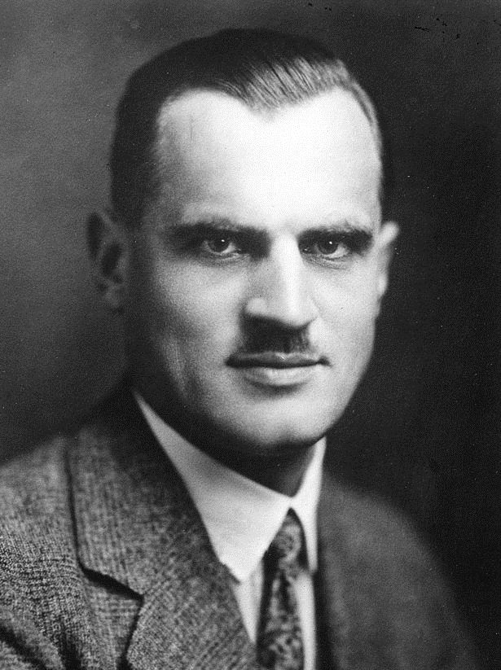
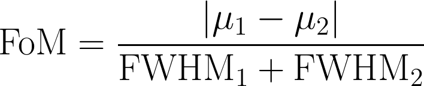
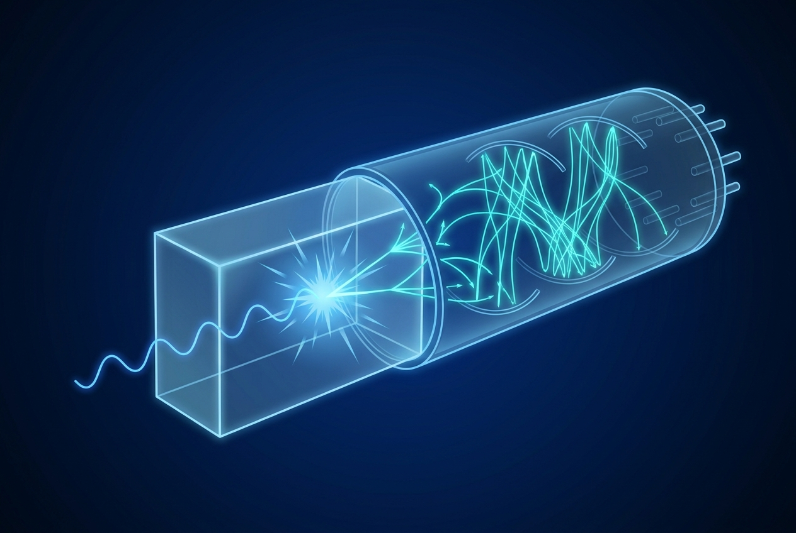
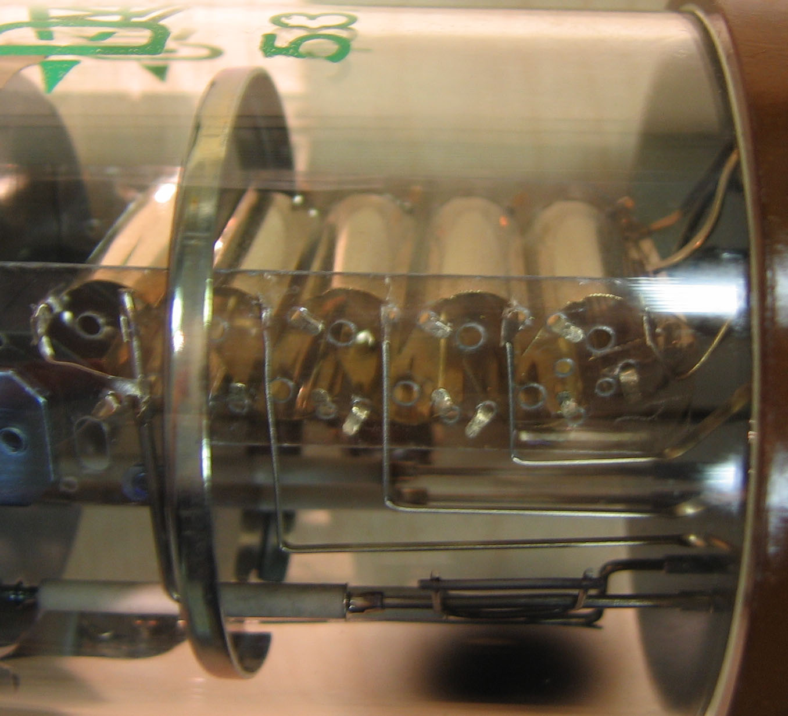

Activator. A dopant atom (typically a few atomic percent of the host crystal) that produces the scintillation light in a doped scintillator. Tl in NaI(Tl), Ce in LaBr3:Ce, Eu in CaF2(Eu) are activators.
Afterglow. The residual emission of light from a scintillator on timescales much longer than the nominal decay time, caused by delayed recombination of trapped charge carriers.
Alpha pulser. A small Am-241 alpha source mounted inside a detector housing for spectrum stabilization. The alpha-induced scintillation produces a peak at known gamma-equivalent energy whose position serves as a real-time gain reference.
Backscatter peak. A feature in a gamma spectrum from gamma rays that scatter off the detector surroundings, lose energy, and then deposit the remaining energy in the crystal. Appears at energy lower than the photopeak, typically around 200 keV for a Cs-137 source.
Bialkali photocathode. The standard Cs-Sb-K photocathode used in PMTs, peaking at 25 to 30 percent QE in the 400 to 420 nm range.
Birks formula. Empirical relation describing the reduced light yield per unit energy at high ionization density, accounting for ionization quenching. Important for alpha-particle and heavy-ion response.
Channel (MCA). One bin in a histogram of pulse heights. A 4096-channel MCA divides the input pulse-height range into 4096 bins.
CLLBC, CLYC, CLLB. Elpasolite scintillators capable of simultaneous gamma and thermal neutron detection through pulse shape discrimination. Cs2LiLa(Br,Cl)6:Ce, Cs2LiYCl6:Ce, and Cs2LiLaBr6:Ce respectively.

Compton edge. The maximum energy a Compton-scattered electron can acquire from an incident gamma ray. Appears as a broad shoulder in the gamma spectrum at energy E_g - 2 E_g^2 / (m_e c^2 + 2 E_g).
Compton effect. Inelastic scattering of a photon by a quasi-free electron, transferring part of the photon energy to the electron and changing the photon direction.
CsI(Tl), CsI(Na). Cesium iodide doped with thallium or sodium. The standard non-hygroscopic and slightly hygroscopic alkali halide scintillators.
Cs2HfCl6 (CHC). Cesium hafnium chloride. A new non-hygroscopic scintillator with light yield exceeding NaI(Tl) and energy resolution approaching 1 percent at 662 keV in best samples.
Dark count rate (DCR). Spontaneous discharges in a SiPM in the absence of light, driven by thermal generation in the depletion region.
Decay time. The 1/e fall time of the scintillation light pulse after the rise. Many scintillators have multiple decay components.
Dead time. The time after a detected pulse during which the system cannot register subsequent pulses. Causes count-rate-dependent corrections to recorded counting rates.
Digital pulse processor (DPP). Electronics that digitize the preamplifier output and perform pulse-height analysis, timestamping, and pulse-shape discrimination in firmware.
Displacements per atom (DPA). Unit of accumulated radiation damage from neutron flux, used in fusion-reactor and high-energy-physics environments where the relevant mechanism is lattice displacement rather than ionization.
Effective Z (Z_eff). A weighted average atomic number representing the photoelectric absorption properties of a compound material.
Elpasolite. A family of mixed-halide scintillators (Cs2NaY(Cl,Br)6 type) with the unusual property of detecting both gamma rays and thermal neutrons in the same crystal volume, with PSD distinguishing the two event types.
Emission peak. The wavelength at which the scintillator's emission spectrum is maximum.
Energy resolution. The full width at half maximum (FWHM) of a photopeak divided by the peak centroid energy, expressed as a percentage.

Figure of merit (FoM). In PSD, a measure of how cleanly two distributions are separated. FoM = | mu_1 - mu_2 | / (FWHM_1 + FWHM_2). Above 1.5 indicates clean separation.
FWHM. Full width at half maximum. The width of a peak measured at half its height.
GAGG:Ce. Cerium-doped gadolinium aluminum gallium garnet, Gd3Al2Ga3O12:Ce. A non-hygroscopic high-light-yield scintillator emitting in the green band, well matched to silicon photodetectors. Codoped variants (GAGG:Ce,Mg) have shorter decay times.
Gamma-equivalent energy. The energy at which a non-gamma event (alpha, neutron capture) appears in the spectrum if calibrated against gamma sources. Useful for reporting where features show up in a mixed-event spectrum.
Geiger mode. Operation of an avalanche photodiode above breakdown, where each detected photon triggers a self-sustaining discharge of the same magnitude regardless of photon energy. The basis of SiPM operation.
HALEU. High-assay low-enriched uranium, with U-235 concentration between 5 and 20 percent. The fuel form for many advanced reactor designs.
HPGe. High-purity germanium semiconductor detector. Used at liquid nitrogen temperature, achieves sub-keV energy resolution at MeV gamma energies.
Hygroscopic. A material that absorbs moisture from the atmosphere. NaI(Tl) is highly hygroscopic; CsI(Tl) is slightly hygroscopic; GAGG:Ce, BGO, LYSO are non-hygroscopic.
LaBr3:Ce. Cerium-doped lanthanum bromide. High light yield, high resolution, fast decay, hygroscopic. La-138 intrinsic background limits low-background applications.
Light coupling. The optical interface between the scintillator and the photodetector, typically silicone-based optical grease, optical cement, or air gap with index-matched components.
Light yield. The number of scintillation photons produced per unit of energy deposited, typically expressed in photons per MeV.
List mode. Acquisition mode in which every detected event is recorded with its pulse height, timestamp, and metadata, allowing post-acquisition reanalysis.
LSO:Ce, LYSO:Ce. Cerium-doped lutetium oxyorthosilicate and its yttrium-substituted variant. The dominant scintillators for clinical PET.
Mott-Seitz model. Empirical model of thermal quenching in scintillators, eta(T) = 1 / (1 + C * exp(-E_a / kT)).
MCA. Multichannel analyzer. The instrument that histograms pulse heights to produce a spectrum.
Multichannel analyzer. See MCA.
NaI(Tl). Sodium iodide doped with thallium. The most widely used scintillator for general-purpose gamma spectroscopy. Highly hygroscopic.
Non-proportionality. The deviation of a scintillator's light yield from linearity in energy deposited. The dominant resolution-limiting effect in alkali halides at high energies.
Pair production. Conversion of a photon (above 1.022 MeV) into an electron-positron pair in the field of a nucleus.
PDE. Photodetection efficiency. The probability that an incident photon produces a measurable signal in a SiPM. Product of geometric fill factor, QE, and Geiger probability.
Photoelectric effect. Absorption of a photon by an atom with ejection of an electron and full deposition of the photon energy.
Photopeak. The peak in a gamma spectrum corresponding to full energy deposition by photoelectric absorption (with or without intermediate Compton scattering).

PMT. Photomultiplier tube.
PSD. Pulse shape discrimination. Technique for distinguishing event types (gamma vs. neutron, alpha vs. beta) by the shape of the scintillation pulse.

Quantum efficiency (QE). Probability that a photon produces a measurable photoelectron in a photodetector.
Quenching. Reduction in light output due to non-radiative pathways. Includes thermal quenching (temperature-dependent), ionization quenching (Birks formula), and chemical quenching (in liquid scintillators).
Reflector. Material surrounding the non-readout faces of a scintillator, used to redirect scintillation photons toward the photodetector. PTFE tape, MgO powder, and ESR film are common.
SiPM. Silicon photomultiplier. Solid-state photodetector consisting of an array of Geiger-mode avalanche photodiode microcells.
Spectrum stabilization. Compensation for gain drift caused by temperature, count rate, and PMT hysteresis. Standard methods: alpha pulser, LED pulser, electronic stabilization on a known background line.
TOF-PET. Time-of-flight positron emission tomography. PET with sub-200 ps coincidence resolving time, allowing partial localization of positron annihilation along the line of response.
Trapezoidal filter. Digital signal processing technique for optimal pulse-height estimation, producing a trapezoidal output from an exponentially decaying preamplifier pulse.
TTS. Transit time spread. The spread in arrival time of photoelectrons at the first dynode of a PMT, contributing to time resolution.
ADC Analog-to-digital converter ANSI American National Standards Institute APD Avalanche photodiode ASIC Application-specific integrated circuit BGO Bismuth germanate, Bi4Ge3O12 CCD Charge-coupled device CHC Cs2HfCl6 (cesium hafnium chloride) CHP Certified Health Physicist CLLB Cs2LiLaBr6:Ce CLLBC Cs2LiLa(Br,Cl)6:Ce CLYC Cs2LiYCl6:Ce CMOS Complementary metal-oxide-semiconductor CSP Charge-sensitive preamplifier CT Computed tomography CZT Cadmium zinc telluride DCR Dark count rate (in SiPMs) DPA Displacements per atom DPP Digital pulse processor dSiPM Digital silicon photomultiplier FoM Figure of merit FPGA Field-programmable gate array FWHM Full width at half maximum GAGG Gadolinium aluminum gallium garnet, Gd3Al2Ga3O12 HALEU High-assay low-enriched uranium HEU Highly enriched uranium HP Health physics or health physicist HPGe High-purity germanium HV High voltage HVL Half-value layer IAEA International Atomic Energy Agency IEC International Electrotechnical Commission IEEE Institute of Electrical and Electronics Engineers LBC LaBr2.85Cl0.15:Ce (mixed halide variant) LSC Liquid scintillation counting LSO Lutetium oxyorthosilicate, Lu2SiO5 LYSO Lutetium-yttrium oxyorthosilicate LET Linear energy transfer MCA Multichannel analyzer MCP-PMT Microchannel plate photomultiplier tube MIP Minimum ionizing particle N42 ANSI N42 series of radiation-detection standards NaI Sodium iodide NIST National Institute of Standards and Technology (US) NPL National Physical Laboratory (UK) NPSS Nuclear and Plasma Sciences Society (IEEE) NRC Nuclear Regulatory Commission (US) NRRPT National Registry of Radiation Protection Technologists NSS-MIC Nuclear Science Symposium and Medical Imaging Conference (IEEE) OEM Original equipment manufacturer PDE Photodetection efficiency PET Positron emission tomography PMT Photomultiplier tube POI Probability of intercept (in spectrum analysis) PSD Pulse shape discrimination PTB Physikalisch-Technische Bundesanstalt (Germany) QA Quality assurance QE Quantum efficiency RIID Radioisotope identification device RSO Radiation safety officer RTBW Real-time bandwidth SCINT International Conference on Inorganic Scintillators and Their Applications SiPM Silicon photomultiplier SMR Small modular reactor SNM Special nuclear material SPECT Single-photon emission computed tomography SPRD Spectroscopic personal radiation detector TIA Transimpedance amplifier TOF-PET Time-of-flight positron emission tomography TTS Transit time spread TRISO Tristructural isotropic (fuel particle) UV Ultraviolet XRF X-ray fluorescence Z Atomic number Z_eff Effective atomic number